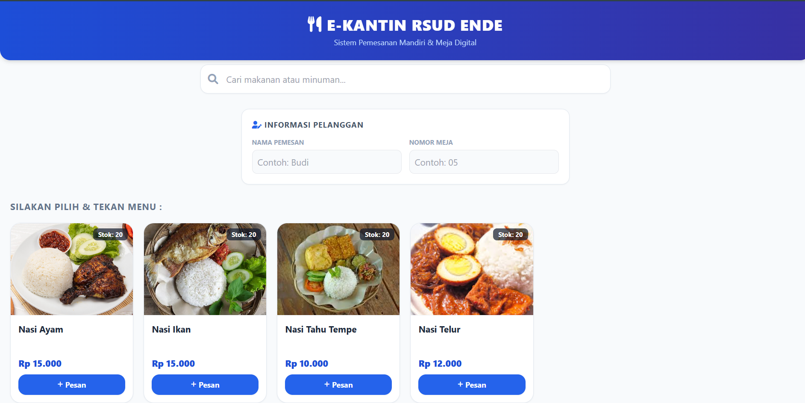
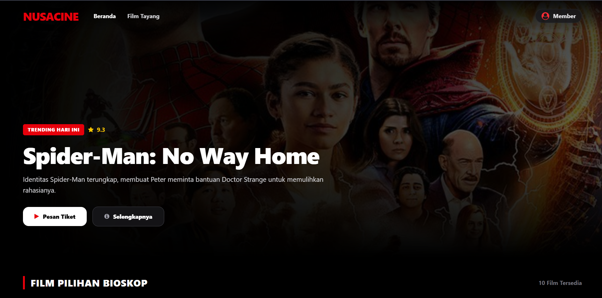
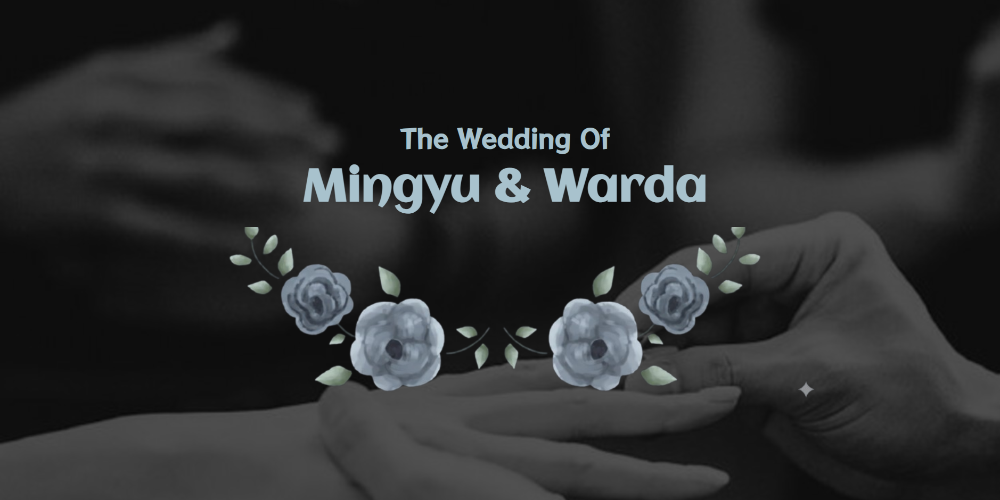

Siswa Jurusan PPLG di MAKN Ende. Berfokus dalam merancang antarmuka web modern yang cepat, fleksibel, serta memiliki nilai estetika dan struktur data yang rapi.
Profil singkat, latar belakang pendidikan, dan perjalanan digital saya.
Saya adalah seorang siswa yang menempuh pendidikan di MAKN Ende, Nusa Tenggara Timur, mengambil jurusan Pengembangan Perangkat Lunak dan Gim (PPLG).
Saat ini, saya sedang aktif mendalami dasar-dasar pengembangan web dan desain UI/UX. Saya telah mempelajari pembuatan antarmuka di Figma serta alur logika dasar backend menggunakan PHP, Laravel, dan MySQL. Sebagai pengembang muda yang terus belajar, saya menyadari masih banyak hal di dunia teknologi yang perlu saya eksplorasi. Saya sangat antusias untuk mendapatkan bimbingan, arahan, serta pengalaman baru dari para profesional di industri agar dapat terus mengasah keahlian dan berkembang menjadi developer yang lebih baik.
Langkah terstruktur dari konsep ide hingga penerapan kode web fungsional.
Memahami kebutuhan sistem, spesifikasi pengguna, dan target fitur proyek secara mendalam.
Merancang tata letak visual, wireframe, dan skema warna interaktif menggunakan Figma.
Implementasi frontend dengan Tailwind CSS & JavaScript serta backend menggunakan PHP / Laravel.
Pengujian performa, validasi form, dan peluncuran web agar siap diakses secara optimal.
Teknologi yang dikuasai untuk merancang dan membangun ekosistem digital.

🛒 Aplikasi e-KantinAplikasi manajemen kantin digital untuk transaksi pesanan makanan dan rekap pelaporan harian.

Platform NusacineNusaCine adalah platform pemesanan tiket bioskop digital modern dengan alur transaksi yang praktis, cepat, dan interaktif.

WordPress : Undangan PernikahanWebsite undangan nikah digital berbasis WordPress sebagai proyek latihan untuk mengasah desain responsif, tata letak visual, integrasi formulir RSVP, dan user experience di bawah bimbingan.
Kirim pesan langsung ke email atau chat via WhatsApp.